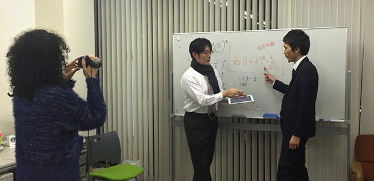
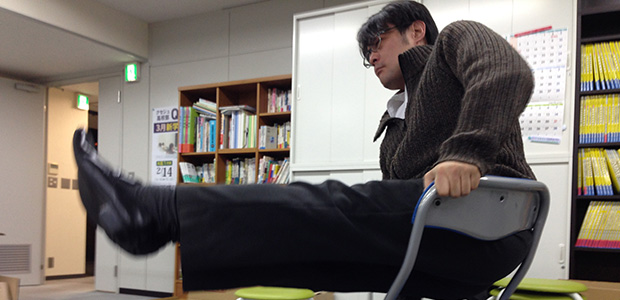
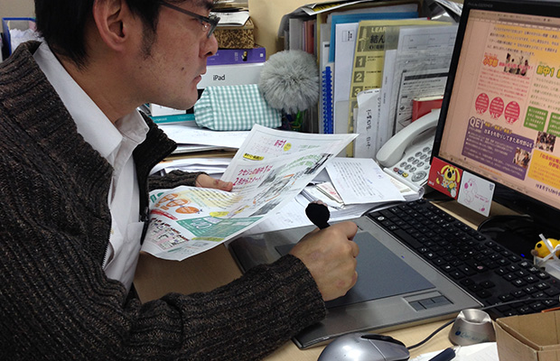

13：00
この日はまず会議から始まります。
池村氏が働く学習塾の本部に社員が集まり、現状の報告と問題点の共有などをしていました。
もうすぐ２月。一足先に新中学１年生の新学期がスタートすることで、どのように授業を盛り上げていくかを再確認していました。
お、新中１は３月に遠足授業もあるみたいですね。楽しそう！
14：45
会議が終わり事務スタッフと様々なことを確認し終え、研究所ＨＰ支配人とともにいざ研究所ＡＲＣＳへ。
なんと徒歩１０秒という超ド級の近さ（笑）。
黄色いビルの３階に研究所があるのですが、地下１階・１階・２階と他が全て飲食店。その中ですぐ下の創作料理屋さんが残念ながら閉店してしまいました。
けっこう美味しかったんですけどね。
ただ、飲食店が多く入っていると、やはり時には匂いが気になることも…。
次に２階に入ってくるのはまた飲食店なのか、はたまた別業種なのか。
もし飲食であれば環境面でしっかりと配慮してもらわねば。
…という話を研究所の美人社長とビルのオーナーが話しているのを横目に、池村氏とＨＰ支配人はビデオカメラを取り出し、何やら打ち合わせをしています。
取材「何やってるんですか？」
池村「あ、これ？ 新しくＨＰに載せる動画コンテンツの撮影」
取材「へ～～！ どんな内容なんですか？」
池村「数学」
必要なことには答えてくれていますがチョットそっけないですね…。
15：10
塾本部の広報の女性も加わり、数学動画の撮影が始まりました。
教育番組みたいにお堅くマジメにやると思いきや、なんか芝居じみたことをやっています。
確率の話ですか。
あぁ～ＨＰ支配人、何百回もサイコロを振らされています（涙）。
けっこう俗な話題（パチンコの確率など）も織り交ぜて、楽しくやっていますね。
難しい式も出てきましたが、そこは理解したい人は調べてみて、というスタンスのようです。
結構シュールな映像で私は好きですが（笑）。

16：30
撮影が終わってからは、池村氏個人の仕事をこまごまとやっているみたいです。
パソコンに向かって、小学生のテストらしきものから高校生向けの教材作り、あと何に使うのかよくわからない挨拶の文面など。
はっきり言って取材している私はヒマでヒマで…。
17：45
やっとパソコン作業が終わったようです。
取材「さぁ、そろそろ授業ですよね。行きましょう」
池村「あ、今日は授業ないから」
えぇ！ 塾講師に密着取材させといて授業なし？
どうやら、今日は一週間で池村氏の授業が唯一ない曜日だったらしい。
じゃあ今日はここから何をするのかな…。
池村「今日はチラシ作成がけっこう大変だから」
あ、塾の広報にも関わっているんですね。
なかなかマルチに活動しているようです。
18：20
塾の本部に戻った池村氏。
チラシを作ると言っていた割には全然違う作業をやっているようですね…。
この空間にいるのは広報の女性と事務の女性スタッフ。
女性に囲まれて楽しそうな池村氏（笑）。

アイデアをひねりだすために精神統一する池村氏
作業をしながらなんか夢とか語っちゃってます。
内容は恥ずかしいからカットして、とのことでしたが。
19：25
さて、チラシ作成作業に本格的に取り掛かります。
彼の一番の仕事は「塾の理念」「３月の学年のコンセプト」「３月の授業の見どころ」などをわかりやすく書くこと。
紙とペンを持ってウンウンうなったり、パソコンの画面とにらめっこしたり、広報の女性からダメ出しを喰らって書き直しをしたり…かなり濃密な時間を過ごしていました。

23：50
とりあえず入稿までまだ日にちがあるから、今日はここまでにしよう。
そう言って広報の女性とカレーを食べるために職場を後にする池村氏。
お疲れ様でした。
え？ そういうあなたは誰かって？
まあ、だいたい文体でわかってしまうと思いますが。
自作自演乙とだけ言っておきます（笑）。